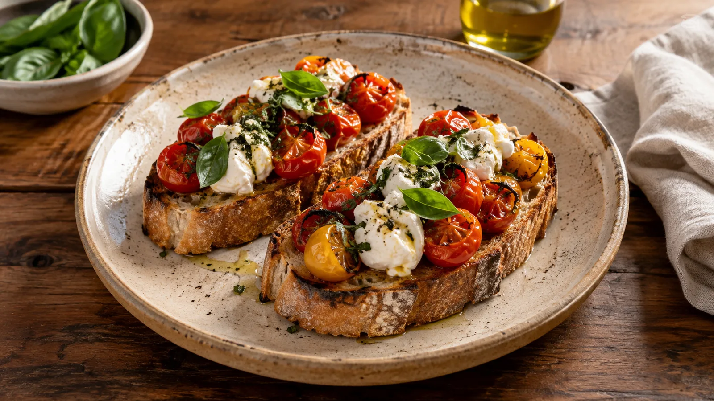
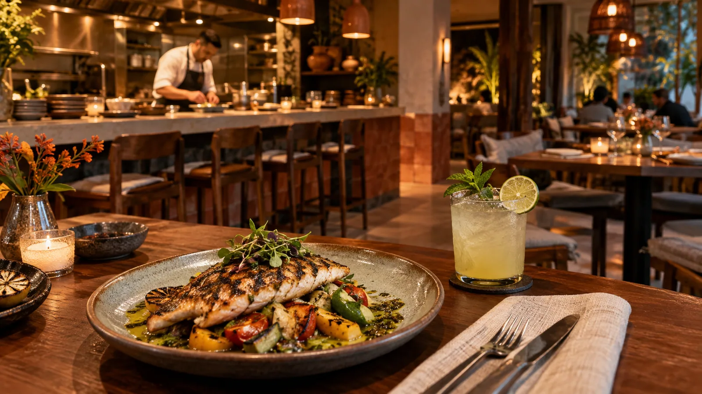

Tostadas de la huerta
Pan artesanal, tomates asados, queso fresco y hierbas.
$ 24.000
Producto de temporada, memoria y el gusto de compartir. Cocinamos para esas mesas donde una buena conversación se queda un poco más.
Explora la carta
Desde una entrada para compartir hasta el último bocado. Explora la carta y arma tu selección.
Elige un turno y el tamaño de tu grupo. Explora cómo se asigna una mesa disponible y cómo se organiza el salón.